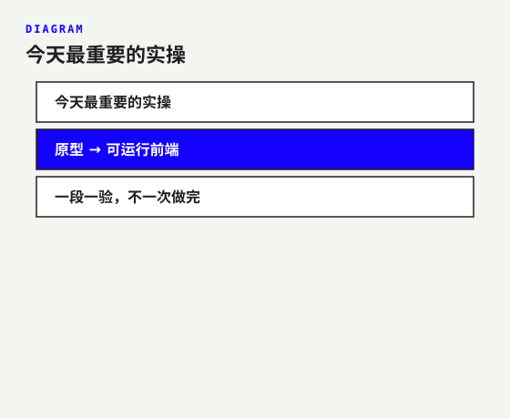
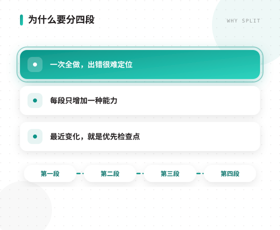
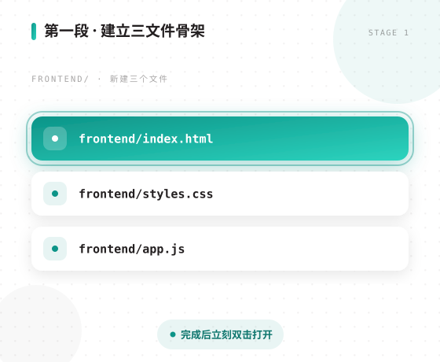
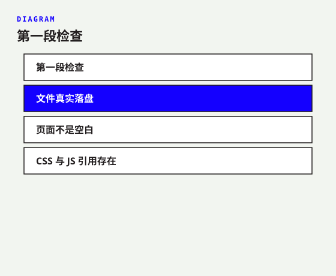
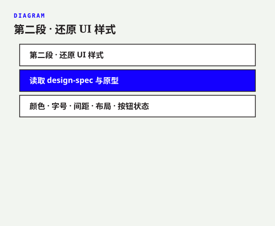
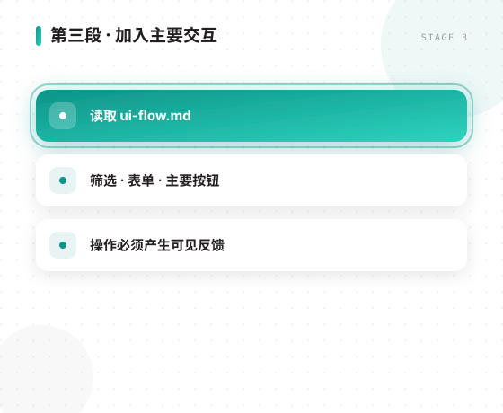
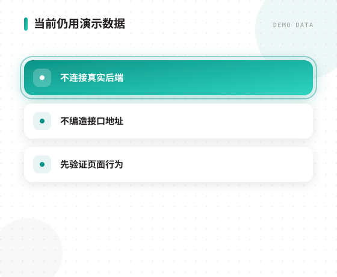
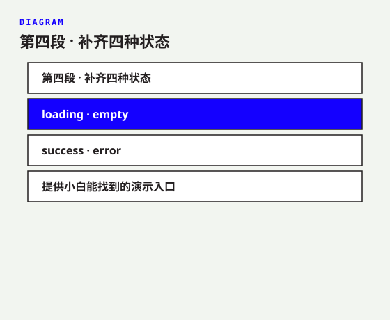
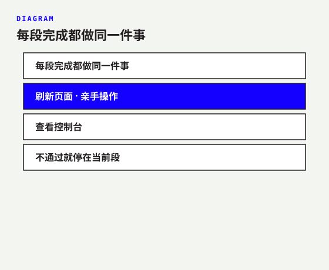
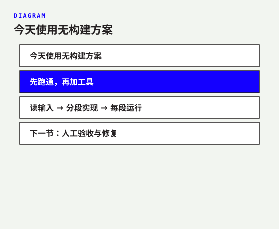

原型 → 可运行前端
一段一验，不一次做完

一次全做，出错很难定位
每段只增加一种能力
最近变化，就是优先检查点

frontend/index.html
frontend/styles.css
frontend/app.js
完成后立刻双击打开

文件真实落盘
页面不是空白
CSS 与 JS 引用存在

读取 design-spec 与原型
字号 · 间距 · 布局 · 按钮状态

读取 ui-flow.md
表单 · 主要按钮
操作必须产生可见反馈

不连接真实后端
不编造接口地址
先验证页面行为

loading · empty
error
提供小白能找到的演示入口

刷新页面 · 亲手操作
查看控制台
不通过就停在当前段

先跑通，再加工具
读输入 → 分段实现 → 每段运行
人工验收与修复
